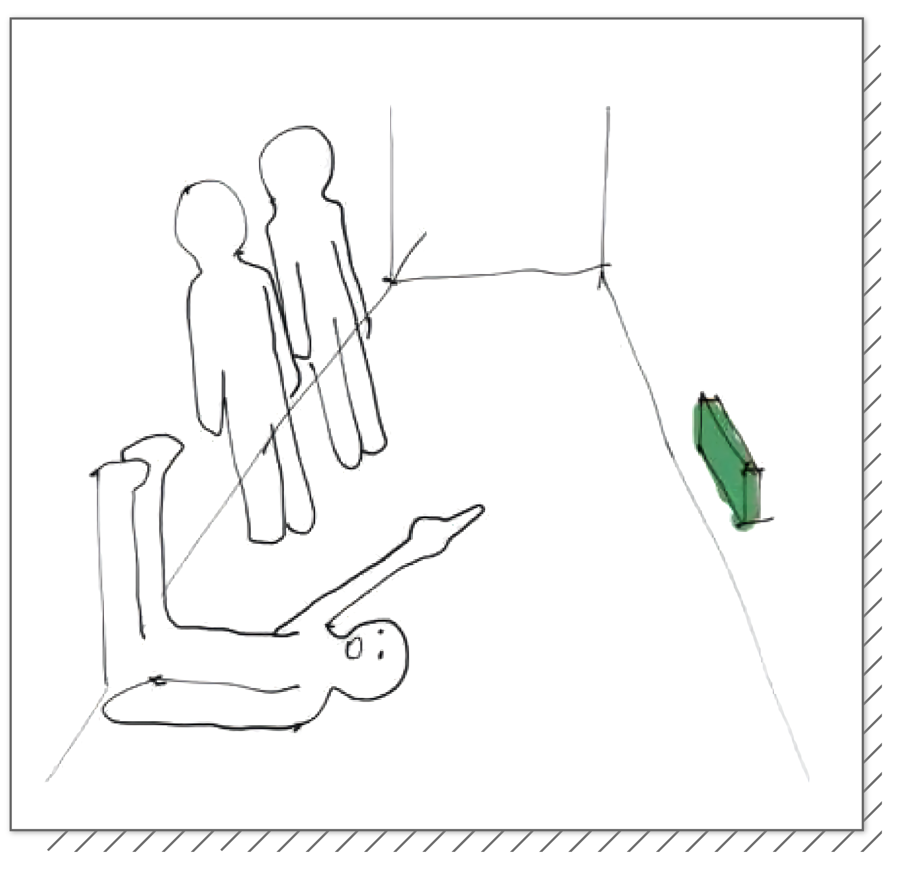
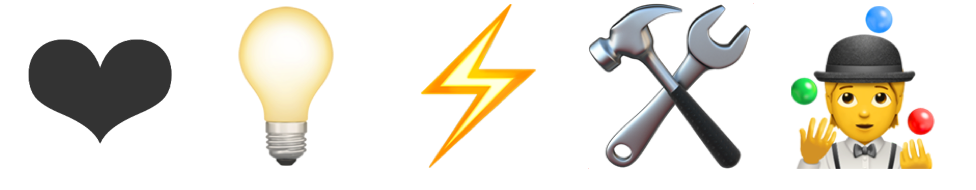

Hi! I'm Guorong Luo.

guorong luo | 罗国荣
Hybrid Techno-Dextrous Design Researcher & Creative Technologist. Dialectical thinker and fantastic experimentalist with a prototyping mindset that “sketches” in physical and digital to learn by doing and making.
RESEARCH INTEREST
With a critical mindset, my research interest focuses on possibilities for using smart agents, augmented reality and tangible interface to promote AI Literacy, enable playful learning and ethically use of AI. Using research-through-design and speculative design as approaches, my recent work also explores the positive and ethical implications of AI, IoT, persuasive technology, and Human-robot(agent) interaction.
EDUCATIONdownload CV
Royal College of Art
M.A in Design Products + Futures
Sep. 2018 to Jul. 2020
Parsons School of Design
B.F.A in Product Design
Jan. 2017 to May 2017
D&I, Tongji University
B.E in Industrial Design
Sep. 2014 to Jun. 2018
EXPERIENCE
YITU Tech
User Experience Design Intern
- Researched the potential innovative applications of YITU's core AI technologies and strategies in new retail/IoT/Robot and reported to the Chief Innovation Officer.
- Designed a brand new AI medical product empowering doctors to train and use machine learning algorithms to conduct research and assist clinical diagnosis.
- Led the UI/UX redesign of a face recognition smart security product for the Public Security Bureau for monitoring and early warning.
- Designed a brand new AI medical product empowering doctors to train and use machine learning algorithms to conduct research and assist clinical diagnosis.
- Led the UI/UX redesign of a face recognition smart security product for the Public Security Bureau for monitoring and early warning.
designaffairs
Industrial Design Intern
- Opened up a new sanitary market segment through market, trend and user research for Panasonic.
- Designed smart home appliances. Helped a Fortune 500 German brand cross-domain transform into Chinese market. One design feature in proposal was selected and merged into the final design.
- Designed smart home appliances. Helped a Fortune 500 German brand cross-domain transform into Chinese market. One design feature in proposal was selected and merged into the final design.
imonkey
Design & Research Intern
- Conducted market research, user persona and hand tool design. Successfully promoted follow-up cooperation with the client.
- Organized participatory design workshop for new power tools development.
- Organized participatory design workshop for new power tools development.
HONORS & AWARDS
2019 | Silver A’ Design Award
Silver A' Design Award Winner in Interface and Interaction Design Category
2019 | A’ Design Award
A' Design Award Winner in Hardware, Power and Hand Tools Design Category
2018 | Golden A’ Design Award
Golden A’ Design Award Winner in Fashion and Travel Accessories Design Category
2018 | Golden A’ Design Award
Golden A’ Design Award Winner in Art, Crafts and Ready-Made Design Category
2018 | Distinction Graduation Project
College of Design & Innovation, Tongji University
2017 | 2nd Academic Scholarship
College of Design & Innovation, Tongji University
2017 | Winner
Dyson “Mission to Mars” Challenge
2016 | S Assessment
“Industrial Design Workshop” at Chiba University
2016 | 2nd Prize
Dafen International Maker Competition
EXHIBITION
2020 | Future Lab 2020
West Bund Artistic Center, Shanghai
2020 | New Horizon 2020
Gree Coast Gallery, Zhuhai
2020 | RCA 2020
Online Show, Royal College of Art, London
2020 | (Un)finished. - London Design Week
Brompton Design District, London
2020 | Trajectories III
Watermans Arts Centre, London - Postponed(COVID-19)
2020 | Ventura Future - Milan Design Week
Milan, Italy - Postponed(COVID-19)
2019 | Work In Process Show
Royal College of Art, London
2018 | Sense-ability Exhibition
Royal College of Art, London